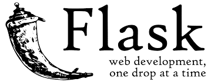
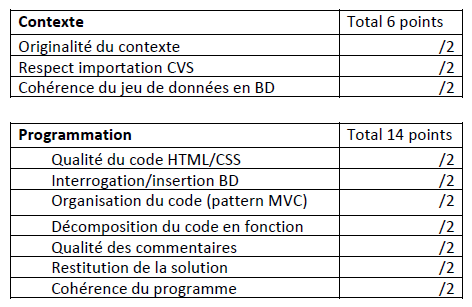

Projet Flask⚓︎

Consignes⚓︎
Consigne
Vous allez réaliser un projet de site Web en utilisant FLASK, python et les bases de données.
L’objectif sera d’avoir une base de donnée manipulable via une page web , avec la possibilité de faire de faire au moins une mise à jour dans la base de donnée (par un UPDATE ou un INSERT).
Consignes :
— Le travail devra être rendu par Ecole Directe ou par mail (callo). Le dossier contenant tous les fichiers sera zippé et envoyé avant le 17 mai 2023.
— Vous pouvez réaliser le travail à 1, 2 en précisant la répartition du travail.
Le dossier contiendra :
— Les fichiers d’extensions .py contenant les fonctions nécessaires, Celles-ci seront documentées (docstring) et plusieurs tests seront adjoints aux différentes fonctions.
— Un dossier templates contenant les fichiers html nécessaires au fonctionnement de projet. Des fichiers css peuvent être ajoutés si vous le souhaitez (voir tutoriel dans la liste des ressources)
— Un fichier de type traitement de texte (libre office ou word) indiquant
- Une brève présentation de votre travail
- Le schéma de votre base de données
- La répartition du travail si le projet a été réalisé à deux ou trois.

plan de travail
BASE DE DONNEES<br />
1. Créer le schéma de votre base de données, au format papier.<br />
2. Le faire valider par votre enseignante<br />
3. Dans un fichier python indépendant du reste du projet, créer votre base de données sous SQLLite<br />
4. Dans un autre fichier, tester par des requêtes simples votre base de données (par exemple : une lecture dans 2 tables et une mise à jour dans une table)
IMPORT DE DONNÉES<br />
Créer un fichier d’importation (d’alimentation) de votre de données, indépendant du fichier de création de la base de données.
INTERFACE<br />
Vous allez maintenant réaliser l’interface à l’aide de Flask.<br />
Créez un nouveau fichier : vue.py. Voici les imports nécessaires :<br />
```Python
from flask import Flask, render_template, request, redirect, url_for
```
**conseil :** Avant de vous lancer dans le code, essayer de structure<br />
Voulez vous Arrivez vous sur une page d’accueil ? ou sur une page de formulaire ?<br />
Essayer de dessiner sur papier ou sur draw.io votre structure, avec vos différentes pages.
Introduction⚓︎
Ce document présente Flask un framework (cadriciel) pour réaliser des applications web dynamiques en Python. Cela permet de rendre accessible n’importe quel code Python depuis une interface web dans un navigateur.
Le plan suivra cette décomposition :
-
Une première partie présente de manière incrémentale la réalisation d’une application web “Bonjour” très simple.
bonjour_v01.py : version minimaliste
bonjour_v02.py : version avec 2 routes
bonjour_v03.py : version avec une page HTML complète
bonjour_v04.py : version utilisant les templates
bonjour_v05.py : version avec formulaire -
Une seconde partie compile quelques fonctionnalités complémentaires parfois utiles avec Flask
bonjour_v06.py : version avec fichiers statiques CSS et images
bonjour_v07.py : version avec templates hiérarchisés
bonjour_v08.py : version illustrant la syntaxe des templates
bonjour_v09.py : version utilisant les sessions
bonjour_v10.py : version affichant des notifications
bonjour_v11.py : version avec une base de données SQLite
bonjour_v12.py : version avec téléversement de fichiers
bonjour_v13.py : version avec paramètre dans l’URL
Pour installer Flask, il suffit de faire dans une console :
```Python Console Session $ pip3 install flask
## Partie 1 : “bonjour”
Dans ce chapitre, vous allez réaliser une application web dynamique en Python à l’aide de Flask.
Il y aura plusieurs versions successives ajoutant chacune une nouvelle fonctionnalité à l’application web.
### 1.1 Version basique bonjour_v01.py
```Python
# Librairie(s) utilisée(s)
from flask import *
# Création d’un objet application web Flask
app = Flask(__name__)
# Création d'une fonction accueillir() associée à l'URL "/"
# pour générer une page web dynamique
@app.route("/")
def accueillir():
"""Affiche un message dans le navigateur web"""
return "<h1>Bienvenue</h1>"
# Lancement de l'application web et son serveur
# accessible à l'URL : http://127.0.0.1:1664
if __name__ == "__main__":
app.run(host="0.0.0.0", port=1664, debug=True)
Flask qui embarque un serveur web, rend alors l’application disponible dans un navigateur en suivant l’URL : http://127.0.0.1:1664/
⇒ Testez cette URL, vous devriez obtenir...
Une grande partie du fonctionnement du framework Flask repose sur l’association entre une route, une fonction Python et une URL Ce qui se passe quand l’utilisateur entre l’URL dans le navigateur : URL dans le navigateur Route “/” (décorateur) Fonction Python exécutée http://127.0.0.1:1664/ @app.route("/") def accueillir(): """Affiche...""" return "
Bon..
"L’adresse IP 127.0.0.1 est l’adresse IP locale de la machine. Cela permet de tester des applications réseaux sur une même machine.
A noter que vous pouvez également tester le rendu des applications web de vos collègues de classe en modifiant l’adresse IP dans l’URL, par exemple : http://10.229.205.15:1664/
Le schéma sera alors le suivant :
2.2 - Ajout d’une nouvelle page “a-propos” A présent créons une seconde page “A propos” associée à une fonction Python et une URL dédiée. ⇒ Récupérez le code source bonjour_v02.py disponible sur Moodle et également ci-dessous :
Librairie(s) utilisée(s)⚓︎
from flask import *
Création d'un objet application web Flask⚓︎
app = Flask(name)
Création d'une fonction accueillir() associée à l'URL "/"⚓︎
pour générer une page web dynamique⚓︎
@app.route("/") def accueillir(): """Affiche un message dans le navigateur web""" return "
Bienvenue
"Nouvelle page "A propos" associée à l’URL "/a-propos"⚓︎
@app.route("/a-propos") def renseigner(): """Affiche la page a-propos""" return "Application web BONJOUR v0.2"
Lancement de l'application web et son serveur⚓︎
accessible à l'URL : http://127.0.0.1:1664⚓︎
if name == "main": app.run(host="0.0.0.0", port=1664, debug=True)
Cette nouvelle page est disponible dans un navigateur en suivant l’URL : http://127.0.0.1:1664/a-propos
⇒ Testez cette URL comme précédemment Quand l’utilisateur entre l’URL dans son navigateur, on retrouve le même cheminement que précédemment : URL dans le navigateur Route “/” (décorateur) Fonction Python exécutée http://127.0.0.1:1664/a-propos @app.route("/a-propos") def renseigner(): """Affiche...""" return "App..."
⇒ A votre tour créez une nouvelle page “contact” affichant vos nom, prénom et adresse électronique 2.3 - Page HTML complète simple Dans cette nouvelle version, nous allons voir plus en détail comment Flask peut générer une page HTML complète. En fait c’est à chaque fonction Python associée à une certaine route qu’il incombe de générer le code HTML qui sera affiché dans le navigateur. ⇒ Récupérez le code source bonjour_v03.py disponible sur Moodle dont un extrait figure ci-dessous :
Nouvelle page affichant un message "bonjour"⚓︎
@app.route("/bonjour") def dire_bonjour(): """Affiche un message bonjour""" # Préparation du code HTML page_html = "<!DOCTYPE html>
" page_html += "Bonjour
" page_html += f"Bonjour, nous sommes le {datetime.now()}" page_html += ""
# On retourne le code HTML de la page
return page_html
Dans cet exemple la fonction dire_bonjour() prépare le code HTML qu’elle retourne ensuite au navigateur. ⇒ Testez cette nouvelle URL http://127.0.0.1:1664/bonjour
2.4 - Page HTML complète avec template La génération de code HTML directement dans le code Python sera longue, répétitive et fastidieuse notamment pour la gestion des guillemets. De plus Il est souvent préférable de dissocier les parties · “statiques” (en HTML/CSS) · “dynamiques” (en Python). C’est pourquoi Flask propose une solution sous forme de fichiers ”template”. ⇒ Créez un nouveau sous-dossier nommé templates à votre projet ⇒ Ajoutez alors un fichier template nommé templates/bonjour.html avec le contenu suivant (également disponible sur Moodle)
Bonjour
Nous sommes le {{date}}
Il ne reste plus qu’à modifier l’application Flask pour préciser à la fonction dire_bonjour() qu’il faut qu’elle retourne un template plutôt qu’une chaîne de caractères. ⇒ Créez un nouveau fichier bonjour_v04.py (disponible sur Moodle) avec la modification suivante pour la fonction dire_bonjour() :
Nouvelle page affichant un message "bonjour"⚓︎
@app.route("/bonjour") def dire_bonjour(): """Affiche un message bonjour""" # Préparation de la date date_du_jour = datetime.now()
# On retourne le template en lui passant la date en paramètre
return render_template("bonjour.html", date=date_du_jour)
⇒ Testez cette nouvelle URL. http://127.0.0.1:1664/bonjour
Le résultat devrait être le même, mais en mieux organisé au niveau du code. Notez comment le paramètre date est passé au template... return render_template("bonjour.html", date=date_du_jour)
...et comment ce dernier l’utilise
Nous sommes le {{date}}
En fait toutes les instructions {{...}} dans le code HTML du template correspondent à du code Python géré par le moteur de template Jinja2 utilisé par Flask.
2.5 - Envoi d’informations avec un formulaire Le plus souvent lorsque l’on souhaite transmettre des informations à une application web, il faut utiliser un formulaire HTML. Le travail à effectuer se sépare en 2 parties : · le formulaire permettant de récupérer le nom · la page recevant les données du formulaire et générant le message
2.5.1 - Le formulaire HTML ⇒ Ajoutez un fichier template nommé templates/bonjour_formulaire.html avec le contenu suivant (également disponible sur Moodle)
⇒ Modifiez la fonction associée à la route “/bonjour” ou récupérez le fichier bonjour_v05.py (disponible sur Moodle),
Le formulaire pour récupérer le nom de l'utilisateur⚓︎
@app.route("/bonjour") def recuperer_nom(): """Affiche le formulaire pour récupérer le nom""" return render_template("bonjour_formulaire.html")
⇒ Testez le formulaire sans cliquer sur le bouton [Envoyer]. http://127.0.0.1:1664/bonjour
2.5.2 - L’exploitation du formulaire Le formulaire créé précédemment va envoyer ses données à la route “/message”. ⇒ Ajoutez un fichier template nommé templates/bonjour_message.html avec le contenu suivant (également disponible sur Moodle)
Bonjour {{nom}}
Nous sommes le {{date}}
⇒ Créez une nouvelle route “/message” associée à une fonction dire_bonjour() ou récupérez le fichier bonjour_v05.py (disponible sur Moodle)
Page affichant un message "bonjour" à partir d'un formulaire⚓︎
@app.route("/message", methods=["POST"]) def dire_bonjour(): """Affiche un message bonjour""" # Récupération du nom à partir du formulaire nom_utilisateur = request.form["nom"]
# Préparation de la date
date_du_jour = datetime.now()
# On retourne le template en lui passant les paramètres
return render_template(
"bonjour_message.html",
date=date_du_jour,
nom=nom_utilisateur
)
⇒ Testez le formulaire en entrant un nom et en cliquant sur le bouton [Envoyer]. http://127.0.0.1:1664/bonjour
Remarquez comment s’opère le lien entre le formulaire initial et le message : Étape Description 1 L’utilisateur entre l’URL : http://127.0.0.1:1664/bonjour
2 Flask recherche la route “/bonjour” associée et exécute la fonction Python qui va elle retourner le template contenant le formulaire @app.route("/bonjour") def recuperer_nom(): """Affiche le formulaire pour récupérer le nom""" return render_template("bonjour_formulaire.html") 3 L’utilisateur renseigne son nom et clique sur le bouton [envoyer]
4 Le navigateur se charge d’envoyer les données du formulaire (champ texte nommé “nom”) à la l’URL “/message” définie dans le champ action en utilisant la méthode POST
5 Flask recherche la route “/message” associée et exécute la fonction. Les données du formulaire sont accessibles dans l’objet request, notamment le champ texte “nom” @app.route("/message", methods=["POST"]) def dire_bonjour(): """Affiche un message bonjour""" # Récupération du nom à partir du formulaire nom_utilisateur = request.form["nom"]
6 Reste à retourner toutes les données au template final return render_template( "bonjour_message.html", date=date_du_jour, nom=nom_utilisateur ) 7 Le template intégrera les données envoyées...
Bonjour {{nom}}
Nous sommes le {{date}}
...pour produire le résultat suivant
3 - Compléments sur Flask Le chapitre précédent a présenté les éléments essentiels pour bâtir une application web avec Flask. Ce chapitre présentera quelques éléments complémentaires.
3.1 - Les fichiers statiques CSS et images Une application web nécessite souvent l’utilisation de fichiers statiques comme les feuilles de style CSS, les images, les documents PDF... Tous ces fichiers doivent être stockés dans un sous répertoire dédié nommé “static”. En imaginant la répartition de fichier suivante : · bonjour_v06.py · templates/bonjour_css_img.html · static/css/mini.css · static/images/tux.png Pour accéder à ces fichiers statiques il faut utiliser la fonction url_for() dans les templates. Par exemple pour ajouter la feuille de style CSS :
Autre exemple affichant une image :
 }})
3.2 - Hiérarchie des templates Flask propose un mécanisme d’héritage et de blocs permettant de factoriser le code HTML des templates de manière très efficace. 1. l’idée est de regrouper tout le code HTML qui doit être commun à toutes les pages de l’application web dans un même fichier. 2. Ensuite les pages suivantes doivent hériter du template de base et ajouter leur propre contenu.
Par exemple avec ce template de base commun à toutes les pages : templates/base.html
La page templates/bonjour_heritage.html hérite du template de base et ajoute son propre code dans le bloc “contenu” :
{% extends "base.html" %}
{% block contenu %}
Héritage templates
Page construite à l’aide de l’héritage de templates
3.3 - if/endif et for/endfor dans les templates Le moteur de template Jinja2 propose via une syntaxe spécifique de réaliser de nombreuses actions possibles en Python. Les filtres :
{{ titre|upper }}
{{ valeur|round(1) }}
{{ code_html|safe }}
Les boucles :
-
{% for valeur in donnees %}
- {{ valeur }} {% endfor %}
Les structures conditionnelles :
{% if choix == True %}
choix = VRAI
{% else %}choix = FAUX
3.4 - Les sessions Les sessions sont un mécanisme utilisé lorsque l’application web a besoin de garder des informations de page en page. C’est dû au fait que le protocole HTTP est sans état : il ne peut pas garder d’information d’une requête à une autre. Exemples d’utilisation des sessions : · authentifier une personne sur plusieurs pages d’un site · gérer un panier d’achat de page en page · garder les préférences utilisateur Dans Flask, les données pourront être stockée côté serveur dans une variable globale sous la forme d’un dictionnaire. Un cookie stocké côté client permettra d’identifier de manière unique une session associée à un client. Au préalable, il faut créer une clef secrète pour l’application : app = Flask(name) app.secret_key = b"Phr@s3_5up3R#s3Kr3//"
Pour écrire une valeur dans la variable globale session : session["nom"] = "Johnny BEGOOD"
Pour lire une valeur depuis la variable globale session : nom_stocke = session.get("nom")
Pour supprimer une valeur de la variable globale session : session.pop("nom", None)
3.5 - Les notifications Afin d’informer vos utilisateurs d’éventuelles erreurs ou pour leur confirmer certains actions, Flask propose un système de notifications. Pour envoyer un message de notification (depuis Flask) : flash("Ceci est un message de notification")
Pour afficher un message de notification (depuis un template) : {% with messages = get_flashed_messages() %} {% if messages %}
-
{% for message in messages %}
- {{ message }} {% endfor %}
3.6 - Utiliser une base de données SQLite Même si il existe des librairies spécifiques pour gérer les bases de données dans Flask comme par exemple SQLAlchemy, le plus simple est de créer une classe Bdd que vous utiliserez dans Flask. Cela permet de bien séparer les rôles. Exemple de base de données data.sqlite avec une seule table Personnes : id nom 1 riri 2 fifi 3 loulou
Création de l’objet base de données en début de contrôleur :
Librairie(s) utilisée(s)⚓︎
from flask import * from bdd import *
Création d'un objet application web Flask⚓︎
app = Flask(name)
Création de l'objet pour accéder à la base de données SQLite⚓︎
bdd = Bdd("bdd/data.sqlite")
Exemple de méthode de la classe Bdd (Modèle) def recuperer_personnes(self): """Récupère des personnes dans la table
Returns:
(list of tuples) : liste des personnes
"""
connexion = sqlite3.connect(self.chemin_bdd)
curseur = connexion.cursor()
requete_sql = """
SELECT *
FROM Personnes;"""
resultat = curseur.execute(requete_sql)
personnes = resultat.fetchall()
connexion.close()
return personnes
Exemple de route associée à une fonction Python dans le Contrôleur
Page utilisant une base de données⚓︎
@app.route("/test-bdd") def tester_bdd(): # Récupération des personnes de la base de données SQLite personnes = bdd.recuperer_personnes()
# Transmission pour affichage
return render_template(
"bonjour_bdd.html",
personnes=personnes
)
Exemple d’affichage dans le Vue :
-
{% for personne in personnes %}
- id={{ personne[0] }}, nom={{ personne[1] }} {% endfor %}
3.7 - Téléversement de fichier Le téléversement de fichier de l’utilisateur est souvent utilisé pour transférer la photo de l’utilisateur ou un document. Cette manipulation n’est pas anodine car elle peut permettre à quiconque de transférer des fichiers dangereux (script malveillant, virus...) La première étape consiste à créer un formulaire pour que l’utilisateur puisse choisir le fichier à téléverser :
Il faut ensuite ajouter un contrôleur dans l’application Flask pour gérer le téléversement du fichier sélectionné par l’utilisateur : @app.route("/televersement-fichier", methods=["POST"]) def televerser_fichier(): # Récupération du fichier (si il est présent dans request) if "fichier" not in request.files: flash("Pas de fichier envoyé") return redirect("/test-televersement") fichier = request.files["fichier"]
# Renommage du fichier si il a un nom
if fichier.filename == "":
flash("Pas de nom au fichier envoyé")
return redirect("/test-televersement")
nom_fichier = secure_filename(fichier.filename)
# Vérification de l'extension du fichier
if nom_fichier.rsplit(".", 1)[1].lower() != "jpg":
flash("Pas de nom au fichier envoyé")
return redirect("/test-televersement")
# Sinon, si tout est bon, on sauvegarde le fichier...
fichier.save(f"static/uploads/{nom_fichier}")
flash(f"Félicitations, {nom_fichier} a bien été téléversé")
# ... et on redirige vers la page d'origine
return redirect("/test-televersement")
3.8 - Passage de paramètre dans l’URL
Flask permet d’utiliser les URLs pour passer des paramètres aux fonctions.
C’est dans la fonction décorateur définissant la route qu’il faudra définir le paramètre à passer. La fonction associée pourra ensuite utiliser ce paramètre comme n’importe quel autre paramètre Python.
Dans l’exemple suivant on utilisera un paramètre “nom”.
@app.route("/test-parametre-url/
Dans le navigateur, on utilisera l’URL suivante : http://127.0.0.1:1664/test-parametre-url/jbegood
Pour obtenir :
3.9 - Hébergement Heroku Heroku est une plateforme qui propose d’héberger des applications web écrites dans différents langages dont Python. Cet hébergement est gratuit si il n’utilise pas trop de ressources (connexions, RAM, CPU...) et donc convient parfaitement pour projets personnels et non commerciaux.
01 - Création d’un compte 02 - Installation du client heroku cli $ curl https://cli-assets.heroku.com/install.sh | sh
03 - Authentification (utilise le navigateur juste pour l’authentification) $ heroku login
04 - Initialisation du dépôt git $ mkdir test-flask-nsi $ cd test-flask-nsi $ heroku git:remote -a test-flask-nsi
05 - Installation du serveur qui remplacera celui de Flask $ pip3 install gunicorn
06 - Création du fichier requirements.txt gérant les dépendances du projets Flask==1.1.1 gunicorn==20.0.4 itsdangerous==1.1.0 Jinja2==2.10.1 Werkzeug==0.16.1
07 - Création du fichier Procfile gérant le lancement de l’application : web: gunicorn bonjour_v01:app
08 - Ajout du fichier de l’application Flask $ quelque/part/cp bonjour_v01.py .
09 - Le répertoire du projet doit contenir actuellement 3 fichiers : · bonjour_v01.py · requirements.txt · Procfile 10 - Il va à présent falloir ajouter ces 3 fichiers au dépôt git avec $ git add . $ git commit -m “Ajouts des fichiers de l’application web”
11 - Ne reste plus qu’à déployer sur la plateforme Heroku avec : $ git push heroku master
12 - Si tout va bien l’application Flask est maintenant accessible en suivant l’URL https://test-flask-nsi.herokuapp.com/